Cargando el catálogo…
Aquí encontrarás todos los Bienes de Interés Cultural (BIC) declarados oficialmente en Castilla y León, junto con información y material multimedia de Wikidata, Wikipedia y Wikimedia Commons. Un proyecto libre, sin cuentas ni anuncios.
Más sobre el proyecto